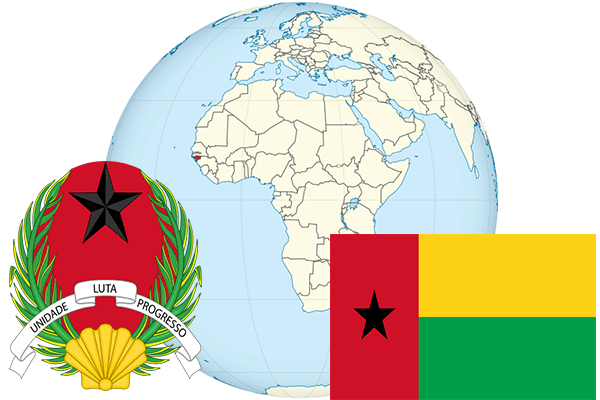

To`liq nomi: Gvineya-Bisau Respublikasi
Region: G`arbiy Afrika
Qonunchilik shakli: Respublika
Mustaqillik kuni: 24-sentabr 1974-yil (Portugaliyadan)
Poytaxt: Bisau
Maydoni: 36 120 km² (dunyoda 133 -o`rinda )
Chegaradosh davlatlari: Senegal, Gvineya
Aholisi: 1 647 000 (dunyoda 149 - o`rinda, 2010 -yil roʻyxat)
Aholi zichligi: 44,1/km²
Aholining o`rtacha yoshi: 47,2 yil (49,0 ayollar, 45,4 erkaklar)
Rasmiy tili: portugal tili
Dini: 65% mahalliy din, 30% musulmon, 5% xristian
Pul birligi: Afrika franki
Telefon prefiksi: +245
Internet domen: .gw
Xalqaro tashkilotlarga a`zoligi: BMT (1974 – yildan)
Dengiz va okeanlarga chiqishi: Atlantika okeani
YIM: Butun: $ 1784 mln Jon boshiga $ 1084 (2008 - yil roʻyxati)
Yirik shaharlari: Bisau